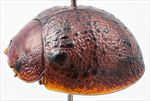
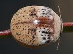
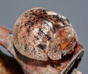
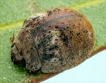
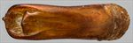
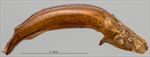
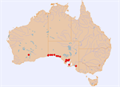

Click on images to enlarge
.jpg){kind=link}

Male, Ceduna, South Australia


Female, Cowell, South Australia


Female, Penong, South Australia


Male, Fowlers Bay, South Australia


Aedeagus, dorsal view (Ceduna, South Australia)


Aedeagus, lateral view (Ceduna, South Australia)


Distribution
Name
Trachymela sp. Ta174
Reference specimen
2004-176, Ceduna, South Australia.
Adult Description
Length: ♂ 5.4–6.2 mm (n=21), ♀ 5.4–6.8(7.0) mm (n=22).
Colouration:
- Head: uniformly light- to mid-brown with dark-brown or black-tipped mandibles; labrum straw-brown; antennomeres straw-brown, usually uniformly so, less often with distal antennomeres (usually only their distal extremity) slightly darker.
- Pronotum: brown, concolorous with head, usually with a black macula present behind each eye, varying from a small round spot at centre of foveal depression to a more extensive oblique macula extending from near anterior edge to close to posterior edge of pronotum and occupying much of foveal depression, in a few specimens these maculae are completely absent.
- Scutellum: brown, concolorous with pronotum, usually edged in dark brown.
- Elytra: brown, concolorous with or fractionally darker than pronotum, the elytral disc is dotted with small to moderate-sized black (or dark-brown) wart-like elevations, these are most dense near anterior edge, between humeral callus and elytral suture, along posterior edge of antero-median depression and in apical third, a line of these is frequently present along discal margin, a short black ridge extends posteriorly from base centred between scutellum and humeral callus, elytral suture between elytral summit and apex is often edged in black, humeral callus black.
- Venter & Legs: light- to mid-brown with legs of a concolorous shade, inner thoracic ventrites sometimes slightly darker, inside surface of elytral epipleura brown anteriorly, dark-brown or black away from margin in posterior half, rarely black more extensively.
- Cuticular Wax: a thin to moderately thick layer of mainly grey mixed with some brown wax is present on head and pronotum; the anterior third of elytra has light-brown or greyish cuticular wax and is particularly dense and prominent in transverse depression and as small clumps on anterior edge of elytra adjacent to scutellum, on the remainder of elytra from posterior edge of median depression to apex the cuticular wax is darker brown, clearly contrasting with the anterior section.
Morphology:
- Head: punctures moderately large (pd ≈ 1.5–2× ef) and quite evenly and densely distributed. Antennae short, particularly in females (AL: ♂ 40–42% BL, ♀ 32–35% BL), filiform.
- Pronotum: almost evenly curved transversely, foveal depression absent or exceedingly shallow with epidermis usually elevated in a rounded pustule near its centre, discal area with surface usually smooth, rarely slightly uneven, puncturation clearly impressed, evenly distributed and quite dense (spacing ≈ 1.5–2.5 pd), becoming much coarser at lateral margins, some much finer punctures are scattered among the larger ones. Front margins join lateral margins in a smoothly rounded right-angle, with lateral margin initially straight before curving smoothly and gradually towards rear margin.
- Scutellum: punctured throughout, with punctures similar or slightly finer than those on adjacent area of pronotum.
- Elytra: surface slightly unevenly curved with a broad but very shallow depression extending from just below elytral summit towards the discal margin, punctures often distinct and relatively large, closely spaced and evenly distributed over anterior two-thirds of surface, sometimes less so, with uneven surface obscuring punctures, surface usually more granular in posterior third, very fine punctures scattered on the interstices throughout, many mostly small, elevated, usually dark verrucae are present and quite unevenly distributed, with concentrations in anterior angle between humeral callus and scutellum, along posterior edge of antero-median depression (where they sometimes form a rough transverse ridge) and in posterior third of disc, the verrucae tend not to be aligned in longitudinal series except for a row along the lateral margin of disc that is often present, a short elevated, sometimes interrupted ridge centred between scutellum and humeral callus extends posteriorly from anterior margin, surface continuous under humeral callus. Vertical extension of epipleura considerable (HCE/PW = 0.39–0.42).
- Venter: prosternal process with sides almost parallel, closed anteriorly, a light scatter of setae present along prosternal process and on mesoventrite, a single seta each on anterior, median and posterior trochanters; front edge of metaventrite beveled, slightly rounded; inner edge of posterior of epipleura devoid of setae or with scattered, short setae, rarely with a clear line of setae.
Male Genitalia (Aedeagus):
- Dimensions: moderately long (LPE = (32)33–37% BL).
- Dorsal view: sides of shaft smoothly sinuate, broadest at basal sulcus, converging towards narrowest point about centre and then broadening again until about centre of ostial opening, from where sides converge in a smooth arc towards apex with the angle of convergence becoming sharper shortly before apex, dorsal surface smoothly curved with dorso-median channel absent, dorsolateral channels well-defined and converging slightly towards rear, tip protruding only slightly, ostium relatively large with dorsal ostial processes extending far forward, only diverging close to apex, anterior margin lined with setae.
- Lateral view: shaft curved slightly near basal sulcus, then ventral surface almost imperceptibly and evenly curved towards apex before curving downwards noticeably at about 15% of distance from apex, tip small and slightly deflexed.
Immature Stages
Unknown.
Similar species
- Ta160: a slightly smaller species with an aedeagus that is similar in shape (though slightly shorter) than that of Ta174, but lacking the slight constriction behind the ostium that is present in specimens of Ta174.
- Ta120: Very similar to this species (except in the colour of the cuticular wax), see its description for detailed comparison notes.
- Ta159: Also very similar to Ta174, with a similar distribution of cuticular wax. Individuals of the two species have been collected together on the same host in several locations on the Eyre Peninsula. They can be very difficult to distinguish, although Ta159 almost invariably has a well-defined black pronotal foveal region that is either absent or poorly defined in Ta174. The latter species often has posterior half of the inner rim of the epipleural surfaces dark brown or black.
- Ta161: This species appears very similar in external morphological characters – however it is smaller, its inner epipleura are always completely brown and its aedeagus is much shorter relative to body length.
Notes
- Taxonomy: Ta174 is one of a cluster of small species (the adelaidae-group) occurring in mallee habitat that are very difficult to separate on external morphological characters and need much more work to characterize properly. Within this group, it seems closest to Ta160, having a very similarly shaped aedeagus with specimens sometimes showing intermediate states (see below).
- Host Associations: Ta174 has been collected from mallee eucalypts, including Eucalyptus incrassata, E. brachycalyx and E. phenax (all Symphyomyrtus : Dumaria) as well as E. oleosa (Symphyomyrtus : Bisectae, subsection Destitutae).
- Morphological Variation: Three female specimens from widely separated localities (Ceduna [2004-170], Mangalo [2011-061] and Coonalpyn [2022-076]) are considerably larger than is typical for this species. The Ceduna specimen was collected with other specimens of Ta174 at that site and is very similar. The Mangalo specimen lacks the inner dark border in the posterior half of the inner epipleural surface that is typical for Ta174, while the Coonalpyn specimen has an almost completely black inner epipleural surface. Three female specimens from Foul Bay (Yorke Peninsula) have been tentatively included in this grouping. They are almost devoid of black markings dorsally and ventrally and thus may seem closer to Ta119, but the largest of these specimens, at 6.66 mm body length, well exceeds the size range of the latter species. There is some variation in the shape of the aedeagus, with the Cowell specimen [2017-093a] in particular having a noticeably blunter apex, with the widest point closer to the apex and rounding towards it more rapidly, producing an almost flat apical edge. This specimen, along with [2017-095], also differs from typical Ta174 by the lack of any dark colour on inner epipleural surfaces. A specimen from near Fowler Bay, South Australia [2023-116] also lacks black on the epipleura and has a rather shorter and narrower aedeagus than is typical for this species, almost intermediate in shape and size of specimens of Ta174 and Ta160. However, the elytral discal verrucae are relatively sparse and its body length is likely more typical of Ta174.
Copyright © 2026. All rights reserved.